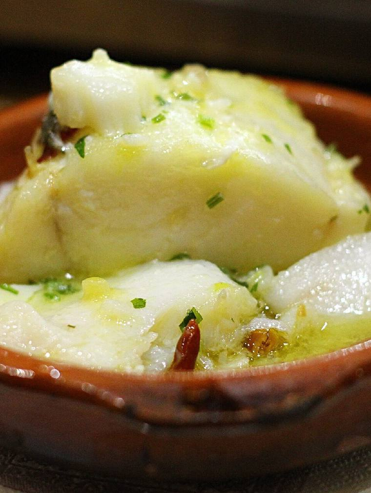

Cuisine espagnole

Cuisine espagnole
Bacalao al pil-pil
Morue basque à l’ail
Préparation : 20 min
Repos : 36 h
Cuisson : 30 min
Ingrédients (pour 4 personnes)
- 4 pavés de morue salée avec la peau
- 25 cl d’huile d’olive
- 6 gousses d’ail
- 1 guindilla (piment sec)
Quantités adaptées. Les temps de cuisson ne sont pas recalculés.
- Dessaler la morue 36 heures au réfrigérateur, en changeant l’eau 3 ou 4 fois. Retirer arêtes et écailles, sécher.
- Dorer doucement l’ail en lamelles dans l’huile, réserver.
- Y pocher la morue environ 10 minutes à feu doux.
- Dans une autre cocotte, poser la morue peau dessous avec un peu de cette huile tiédie.
- Imprimer un mouvement circulaire en versant le reste d’huile peu à peu : la sauce s’émulsionne. Garnir d’ail et de piment.
D’après Spain.info, office espagnol du tourisme. Traduit et reformulé.